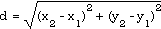
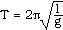
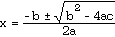

1. What is a procedure, and under what circumstances is it better to use a procedure than to write all the code in the main block of the program module?
2. What are four different models for the action of a procedure on the data flow of a program?
3. What is meant by the invocation of a procedure?
4. What do you call a procedure that invokes itself? When should this technique be used?
5. What is the difference between a value parameter and a variable parameter? Illustrate with examples.
6. Comment on this statement: (Is it true or not, and why?) "WriteCard can write a compatible variable of type INTEGER, but ReadCard cannot read a compatible value to a variable of type INTEGER."
7. What are the differences between a proper procedure and a function procedure? Illustrate with examples.
8. What does RETURN do?
9. Classify each of the following as either built-in or imported procedures and as either a proper procedure or a function procedures (or, none of these.) WriteLn, ABS, FLOAT, ReadReal, MAX, ReadResult, ReadChar, CAP, MIN, exp, ln.
10. Explain why the recursive procedure Fac would not work if the parameter were a variable parameter instead of a value parameter.
11. What is the difference between simple and compound interest?
12. What is the difference between net present value and net future value?
13. Explain why mortgage payments against a debt can be handled like annuity payments out of an accumulated account.
14. Rewrite the procedure Round in section 4.1 to round off a REAL to an INTEGER instead of to a CARDINAL.
15. Extend the program Areas in section 4.2 to include the computation of the areas of triangles and rectangles, each with its own procedure.
16. Write and test a function procedure to convert radians to degrees, and a function procedure to convert degrees to radians.
17. The procedure Swap can be thought of as a special case of a rotation permutation (item 1 is moved to item two, which is moved to item three, etc, and item n is moved to item one.) Write and test a procedure that does a rotation permutation of four items, namely:
PROCEDURE PermuteFour (VAR item1, item2, item3, item4 : CARDINAL); (* does a rotation permutation Pre: none Post: item#i becomes item #(i+1) and item#4 becomes item#1 )
18. Write and test a procedure to generate the ith term of a Fibonacci sequence.
19. When two points are given in coordinate form P1(x1, y1) and P2(x2, y2), the distance between the two points is given by the formula

Write and test a procedure to make this calculation from point coordinates that are input from the keyboard.
20. Write a program to compute the compound interest on a deposit. The principal amount, interest rate, number of years, and the number of times per year the interest is compounded should all be read in from the keyboard. Note that in the formula A = P(1 + i)n for compound interest i will be the annual rate divided by the number of times per year the interest is compounded. Likewise, n is the total number of times the compounding is done, not just the number of years.
21. Rewrite the procedure Round to take into account that some reals input to the procedure may be negative.
22. Generalize the mortgage and annuity program so that the payment period can be other than monthly. Offer the choice of annual, quarterly, bi-weekly, and weekly payments.
23. The period T of a simple pendulum is given by the formula

where l is the length of the pendulum in metres and g is the gravitational constant 9.8m/s2. Write a procedure to do this calculation. Test the procedure in a program that prints out the period and frequency (f = 1/T) of pendulums from 10cm to 100cm in length in a table. Use increments of 10cm from one to the next.
24. A dynamic system that is being accelerated at a constant acceleration a has its initial velocity u, final velocity v and the distance travelled related by the formula v2 - u2 = 2ad. Write a program module that can calculate any one of these in terms of the other three. Each of the four possible calculations ought to be realized in a separate procedure.
25. The "greatest integer" or Floor function takes a real parameter and returns the greatest integer less than or equal to the supplied parameter. Note that this is the same as INT only for positive numbers, for INT (-5.7) produces -5, but Floor (-5.7) produces -6. Write and test the function procedure Floor.
26. Write and test the corresponding ceiling function that takes a real parameter and returns the smallest integer greater than or equal to the parameter.
27. Write a Program module that will dispense change for a dollar for some purchased item costing less than a dollar. The number and denomination of each coin dispensed should be given and the largest possible number of quarters, then of dimes, nickels and pennies should be dispensed. Use at least one procedure.
28. Write a program that can add fractions, finding the appropriate common denominator, doing the addition, and then reducing the fraction to lowest terms. Input should come from the keyboard. If the user inputs 2, 3, 4, 5 for the fractions 2/3 and 4/5 respectively, then the output should be in the form
2 4 7 - + - = 1 -- 3 5 17
29. Write and test a procedure to convert a cardinal to any base from 2 through 9, namely: PROCEDURE WriteCardInBase (num, destBase : CARDINAL)
30. Write a program that will accept a CARDINAL from the keyboard and print it out in words. (Thus 4625 comes out as four thousand six hundred twenty five.)
31. Write a program that will accept as input today's date and a birthdate and compute and print the number of days the person has been alive.
32. Write a program that will accept a CARDINAL x and a CARDINAL exponent y from the keyboard and then use a loop to compute x to the power y. The latter portion should be encapsulated in a procedure. Carefully trap any potential overflows.
33. Write a program to simulate a cash register. The screen should start by giving a message such as: "Please enter the amounts." It should then prompt for each dollar amount with a sign like ">". The user will type in one dollar amount after another until an invalid entry is made (just a carriage return, say). At that point, the program should display on the screen the total amount thus far, then the amount of sales tax for your State or Province (this could be a constant), and then the grand total. It should then display the "?" prompt and wait to see how much cash is tendered by the customer, and then calculate and print the amount of change. A sample "tape" as it might appear on the screen is shown below:
Please enter the amounts: > 1.35 > 4.72 > 11.51 > 9.63 >------- 27.21 subtotal 1.90 sales tax 7% -------- 29.11 total sale ? 30.00 cash tendered ******** .89 change
34. The equation ax2 + bx + c = 0 (a, b, c are real numbers with a > 0) can be solved for x by use of the quadratic formula.

The roots of the equation are real only if the portion b2 - 4ac (the discriminant) is positive. Write a program that will accept the values of a, b, and c, with a procedure to determine whether the roots are real and if they are, another procedure to solve for x.
35. A prime number is one that has exactly two different positive divisors--itself and one. Write a BOOLEAN valued function that returns TRUE if the parameter is prime, and FALSE otherwise. Test your procedure by calling it from some main program.
36. Write a function procedure that displays the prime factorization of the CARDINAL parameter that it is passed. For instance, if the number input is 60, the display should read: 60 = 2 * 2 * 3 * 5 Test this procedure by including it in a program that obtains the numbers to factor from the keyboard.
37. A perfect number is one that is the sum of its proper divisors (those less than the number). Six is perfect because 6 = 1 + 2 + 3. Write a procedure that determines if a number is perfect and prints it along with a message if it is. Test this by writing an encapsulating Module that calls the procedure successively for 1, 2, 3, ... someLargeCardinal. Are there very many perfect numbers?
38. A number is deficient if the sum of its proper divisors is less than the number. A prime number is deficient because its only proper divisor is one. A number is abundant if the sum of its proper divisors is more than the number. Twelve is abundant because 1 + 2 + 3 + 4 + 6 = 16 which is more than twelve. Write a procedure that classifies numbers as sdeficient, perfect, or abundant. Test this by writing an encapsulating Module that calls the procedure successively for 1, 2, 3, ... 300 and printing the results in a neat table
39. Rewrite the mortgage amortization program Amortize in ISO standard Modula-2 and test it carefully.
40. Look up a formula for computing the date for Easter and write a procedure that will take as input the year number and produce the month and date of Easter.
41. Use the procedure in question 19 to compute whether the triangle determined by three points is valid (not all points on one line) and if valid whether it is scalene, isosceles, or equilateral.
42. Use the procedure in question 19 to compute whether the quadrilateral determined by four points is valid (no three points on one line) and if valid whether it is a parallelogram or possibly even a rhombus.
43. By also adding a procedure for the slope formula, extend the categorization in question 42 to rectangles and squares. Is there a way of doing this with just the distance formula?